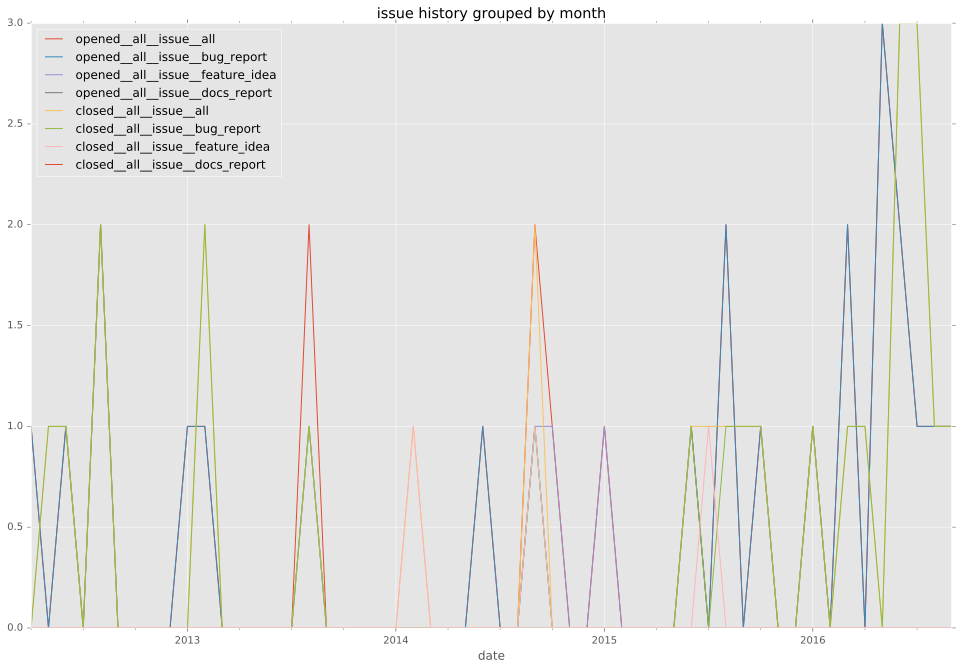
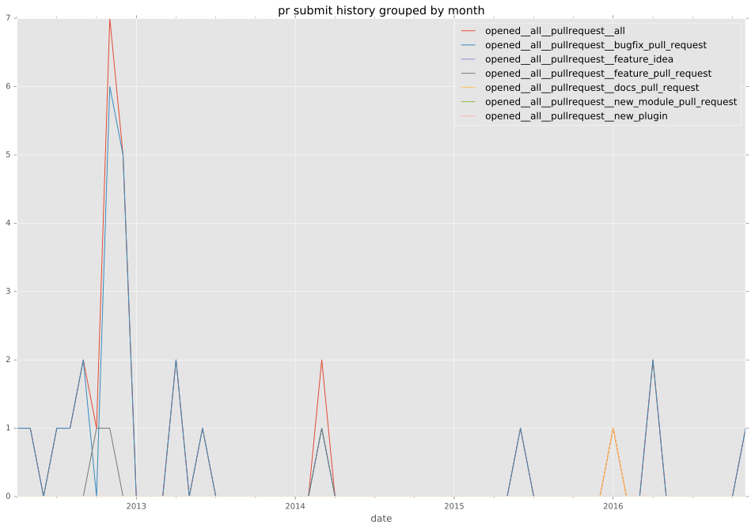

total issue counts
feature pull request: 3
pullrequest: 30
docs pull request: 2
bugfix pull request: 25
feature idea: 4
issue: 29
bug report: 25
issue history

pullrequest history

days open by issue type
bugfix pull request
count: 38
std: 11.086238955
min: 0
max: 42
median: 1.5
mean: 6.52631578947
all
count: 72
std: 84.9047231369
min: 0
max: 641
median: 2.0
mean: 25.3194444444
pullrequest
count: 0
std: nan
min: nan
max: nan
median: nan
mean: nan
docs pull request
count: 2
std: 172.53405461
min: 3
max: 247
median: 125.0
mean: 125.0
feature pull request
count: 5
std: 13.6930639376
min: 0
max: 25
median: 0.0
mean: 10.0
feature idea
count: 3
std: 87.1856257266
min: 25
max: 177
median: 175.0
mean: 125.666666667
issue
count: 0
std: nan
min: nan
max: nan
median: nan
mean: nan
bug report
count: 24
std: 130.778577114
min: 0
max: 641
median: 0.5
mean: 37.4166666667
closures grouped by total days open